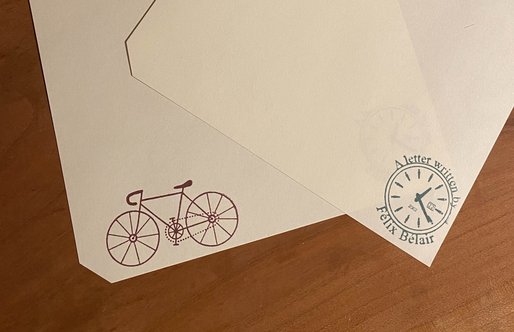
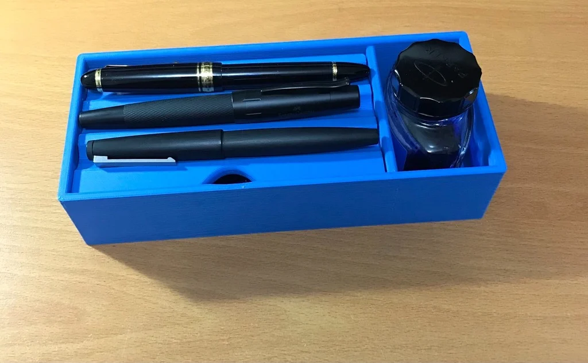
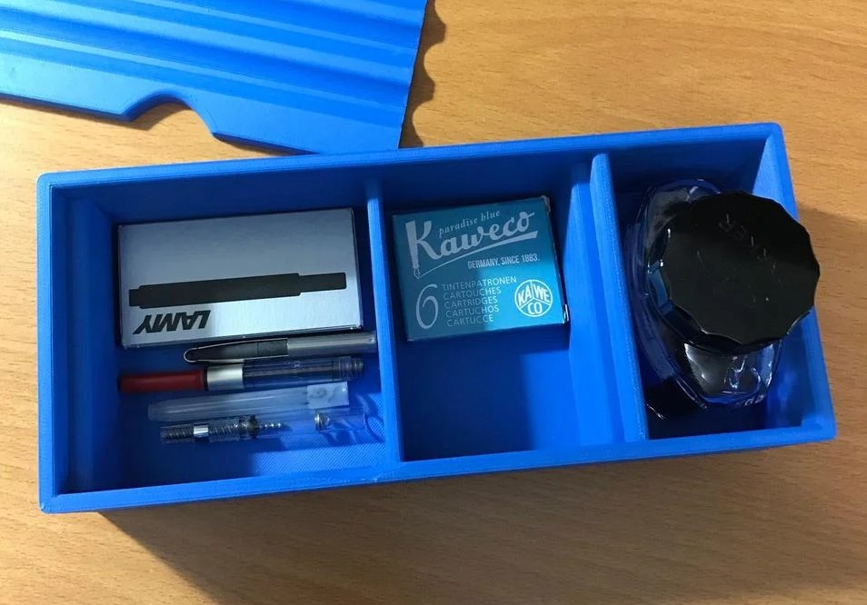

From left to right, we have: Pilot Vanishing Point, Lamy 2000, Edison G-10, Diplomat aero, Pilot Custom 823, and Lamy Al-star. All the nibs are either fine or extra-fine, as our handwriting is quite compact :) Felix wishes he could write with other nib sizes and play with line variation and sheen, but it would drive him crazy having my e's and l's fill up.
The newest edition to the pen family. It is Lilly's first fountain pen and Felix got it for her birthday. We got it in Delft and Lilly uses it to take notes for her classes and to write letters! It is often inked up with Delamere green ink.
Felix got this pen with an EF nib, but it wrote like a Western medium, so he didn't often write with it. Then at some point he lent it to a friend who damaged the nib beyond repair, so he swapped it out with a new EF nib, and this time around, it barely put any ink on the page (super thin line). This didn't suit him either, so he ended up exchanging it for a third EF nib, and this one is the Goldilocks tip! Not too thick, not too thin.
Felix's 4th semester at McGill was quite hectic, due to weekly assignments for many of his courses. So after finals, he decided he would get something special. He wanted a pen that didn't have the classic black cigar look, and he ended up choosing the Pelikan M1000. It didn't write well out of the box, the nib kept on skipping since it was over-polished. The cap wiggled a tiny bit, but it had the best piston filling mechanism he had ever used. Felix ended up asking for a refund and got the aero. He often inks it up with purple ink :).
This was the first high-end pen Felix got. It looked amazing and Felix had only heard great things about it, so when he saw it on discount on Pensachi, it was an immediate buy. It writes amazingly, and it is always fun to write letters with. Felix used up an entire bottle of Iroshizuku Shin Kai with it, and now he's using Robert Oster's fire and ice.
In order to get an optimal writing experience, the nib, the ink and paper are influential factors. A while back, Felix decided to find the best paper for his pens and found that the only decent store in Montreal (Nota Bene) didn't offer much of a selection. So when he visited his family in Toronto, he decided that he would visit stationary stores to see what he have been missing out... He had to stop after the second store since he had purchased enough paper to last many years. And so far, his favorites are Yamamoto Cosmo Air Light, and Tomoe River. Yamamoto has great sheen and he loves the texture. Felix also enjoy MD paper (not cotton) along with Rhodia.
Lilly has also started her own paper collection in the Netherlands. She has Rhodia and MD paper (one of which is green!!). Since living in Europe Felix has also grown his paper collection. In Belgium he bought Le Typographe and Original Crown Mill, and in Switzerland he bought Brachard. Send us a letter and we will respond with some of our favorite paper!
We had a fun time in Basel visiting the Basler Papiermuhle. You learn how paper was made centuries ago. Moreover, the highlight of the museum was their paper-making workshop. You get to make your own paper, postacard and calendar. You can also use a typewriter. Definately recommend if ever you are into paper!
For Felix's birthday, Lilly designed a personal stamp for Felix! It adds a nice touch of personality in his letters when stamped with them. She designed it using inkscape and bought herself some fun stamps too. They use VersaFine Claire ink to stamp their letters.
At some point, Felix wanted a pen box and didn't find much online that pleased him, except for one made by Diplomat. He was inspired by the design and CADed his own version. It was thereafter 3D printed and even has an internal compartment for cartridges and converters. If you want the files, here is a link to its thingyverse. Lilly uses a Denik pouch to cozily store her Lamy Al-star.
  